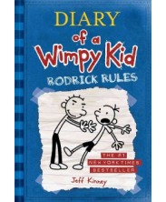

Just Another Love Song
Kerry Winfrey
Summary
Two high school sweethearts get a second chance at their perfect ending in this charming new romance by Kerry Winfrey, author of Very Sincerely Yours.Once upon a time, Sandy Macintosh thought she would have her happily ever after with her high school sweetheart, Hank Tillman. Sandy wanted to be an artist, Hank was the only boy in town who seemed destined for bigger things, and they both had dreams to escape town together. But when Sandy's plans fell through, she stayed in their small town in Ohio while Hank went off to Boston to follow his dreams to be a musician, with the promise to stay together. Only that plan fell through, too. Fifteen years later, Sandy runs a successful greenhouse while helping her parents with their bed and breakfast. Everything is perfect...until Hank rolls back into town, now a famous alt-country singer with a son in tow. She's happy with the life she's built by herself, but seeing Hank makes her think about what might have been. There aren't enough cliché love songs in the world to convince Sandy to give Hank another chance, but when the two of them get thrown together to help organize the town's annual street fair, she wonders if there could be a new beginning for them or if what they had is just a tired old song of the past.
This book hit me so hard. I finished this book a few days ago and I haven't been able to stop thinking about it. It has one of my favorite themes or tropes in a book, where we follow a main character who at the beginning of the story is very depressed and poss ...more
By Nicky April 29, 2022
Okay. Picture this: you are about to bite into a cookie. A big, warm cookie. Kinda crispy on the outside, chewy on the inside, yummy and chocolate chip-y and presumably made with brown butter and flaky sea salt, as all the best cookies are. And then you take a big ol' chomp, and...oh no.
By Ethan April 29, 2022
This book hit me so hard. I finished this book a few days ago and I haven't been able to stop thinking about it. It has one of my favorite themes or tropes in a book, where we follow a main character who at the beginning of the story is very depressed and poss ...more
Tags
Books you might like

Diary of a Wimpy Kid: Dog Days
Jeff Kinney

Diary of a Wimpy Kid: The Last Straw
Jeff Kinney

Diary of a Wimpy Kid: Rodrick Rules
Jeff Kinney